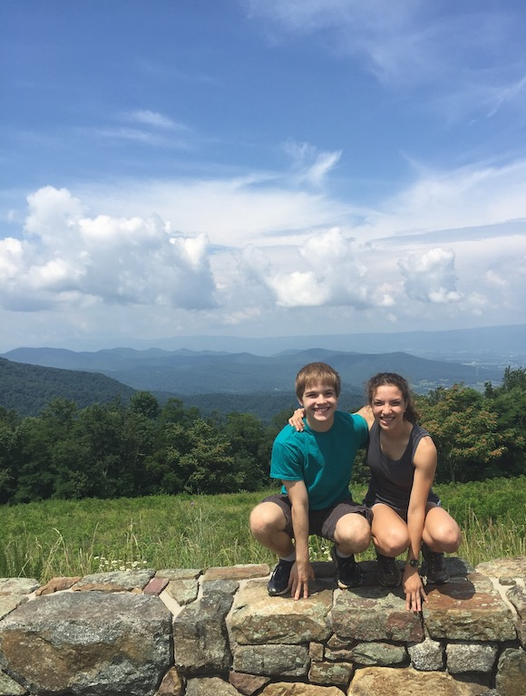
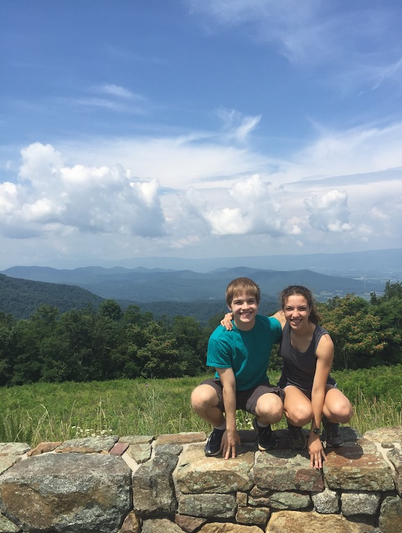

Our Story
October, 2014
Monique and Corwin meet at the back-to-school bash
Corwin asks Monique to homecoming
December, 2014
Mezher family vacation with Corwin
May, 2015
Corwin and Monique take prom photos at Meadowlark Botanical Gardens
September, 2015
Monique surprises Corwin at CMU. Long-distance begins
August, 2016
Corwin and Monique go to Massachusetts to meet Corwin's relatives
October, 2016
Monique learns to play guitar and writes Corwin a song
November, 2016
Corwin buys a car (and dad drives it cross-country) to visit Monique
Summer, 2017
Cross-country road trip
Monique and Corwin live together for the first time, in a loft in Palo Alto
The pitbull Blue routinely invades
The local farmer's market stocks giant almond pastries
Great Basin stargazing incident
October, 2017
Documentation conspicuously absent
Summer, 2018
Cross-country road trip
The Badlands Monsoon
They live in Berkeley together
Ikea veggie balls and Fuddruckers provide sustenance between Moviepass excursions
Yosemite trip cancelled due to fires
October, 2018
Four ears of corn and the Ethiopian takeout took 2 hours
June, 2019
de Boor family reunion in Germany with Monique
August, 2019
Monique and Corwin move into New York (permanently?)
March, 2020
Corwin and Monique flee the city into darkness
July, 2020
A bear derails plans on a woodland hike
Corwin proposes to Monique
January, 2021
Waikiki provides a respite
July, 2021
Monique and Corwin move back into New York
October, 2021
Corwin and Monique get married


 
